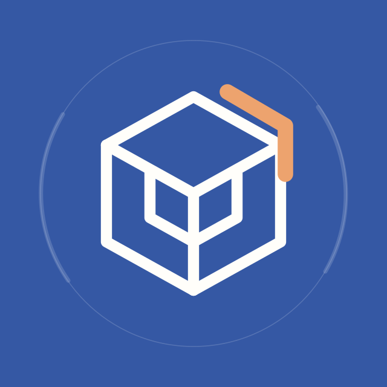

LINE OFFICIAL ACCOUNT / 2026.11
公式LINEも、
次の入口へ。
プロフィール、あいさつ、相談への案内を、今回の公開サイトにそろえます。画像を保存し、各項目をコピーして管理画面へ反映してください。
設定用素材・文面 ／ LINE管理画面で反映
対象アカウント建築資源循環ラボ @825lgipn
01
PROFILE
プロフィールをそろえる
管理画面の「ビジネスプロフィール」で、対象のアカウントを確認します。「プロフィール情報設定」で画像・ステータスメッセージ・Webサイトを更新し、「保存して公開」を選びます。


スマートフォンでは「画像を開く」から画像を長押しして保存できます。アカウント名とIDは、今の設定を引き継いでください。
選択してコピーもできます
選択してコピーもできます
ステータスメッセージは現行の公式仕様で60文字まで。上の短い文を使います。長めの紹介文は、必要に応じて「自由記述」コンテンツへ。コンテンツを保存したら、プロフィールのトップ画面で「公開」を選びます。
Webサイトに登録するリンク
選択してコピーもできます
選択してコピーもできます
選択してコピーもできます
02
WELCOME
あいさつを更新する
「トークルーム管理」→「あいさつメッセージ」で、既存の文章を下の内容に置き換え、「変更を保存」します。応答設定の「あいさつメッセージ」もオンにします。
選択してコピーもできます
保存後の友だち追加などで送られるあいさつから反映されます。すでに送られた文章は変わりません。
03
REPLIES
相談の受け口を整える
手動チャットと応答メッセージを併用
「設定」→「応答設定」で、チャットをオンにし、応答方法に「応答メッセージ」を含む項目を選びます。営業時間を分けない運用なら、応答時間をオフにして「手動チャット＋応答メッセージ」を選びます。
既存の応答時間を使っている場合はその時間を引き継ぎ、時間内・時間外の応答方法をそれぞれ確認します。
既存の応答を「編集」してください
以前の7項目は、同じキーワードの応答を追加せず、本文を差し替えます。保存後は各項目を「利用中」に。キーワードはメッセージ全体との完全一致で反応します。
一律応答（キーワードに当てはまらないとき）
既存の一律応答を編集します。同じ条件の一律応答を複数有効にすると、そのうち1つがランダムで返るため、旧版との重複を避けてください。
選択してコピーもできます
04
RICH MENU
6つの入口を並べる
「リッチメニュー」で、今のメニューを編集します。テンプレートは大・横3列 × 縦2行の6分割。下の画像1枚を背景に設定してください。

画像と同じ位置にアクションを設定
アクションラベルは20文字までです。表示期間は今の運用を引き継いでください。新しく作成する場合は、旧メニューと表示期間が重複しないよう切り替えます。
05
CHECK
友だち側の画面で確認
- プロフィールの画像・背景・文面を保存して公開する。
- あいさつと応答メッセージを保存し、必要な応答を「利用中」にする。
- リッチメニューを保存し、表示期間と各エリアのアクションを確認する。
- スマートフォンのLINEで、6つの入口が画像どおりに開くか確認する。
- 「相談する」をタップし、相談の案内が返るか確認する。
PC版LINEにはリッチメニューが表示されません。表示の反映に時間がかかることがあります。
ホームページへの入口は、このURLで統一。
選択してコピーもできます
OFFICIAL REFERENCES
設定仕様の確認先
確認日：2026年11月9日。以下のLINEヤフー公式マニュアルをもとに更新しました。管理画面の名称はアプリとWeb版で異なる場合があります。